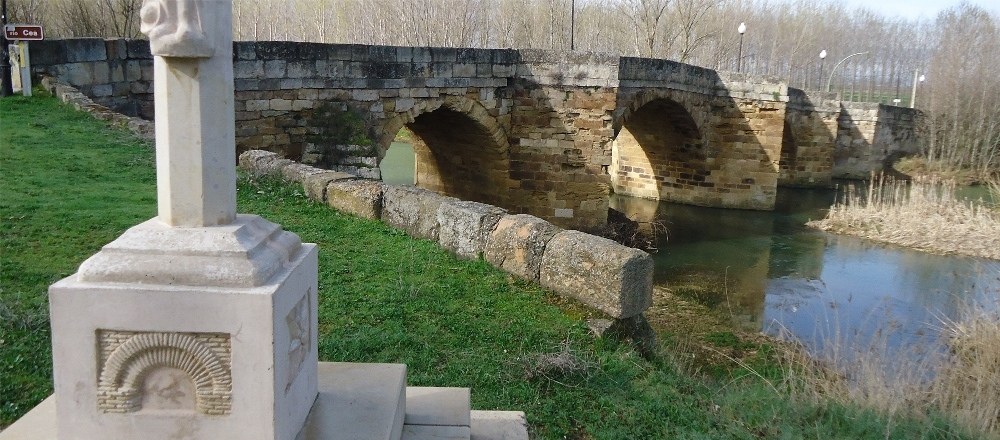
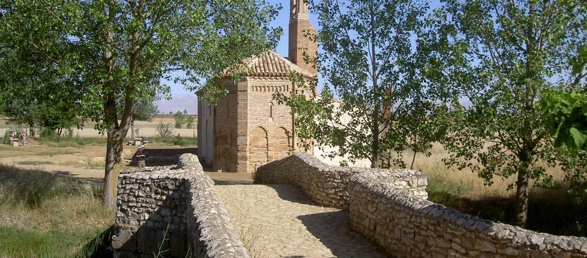
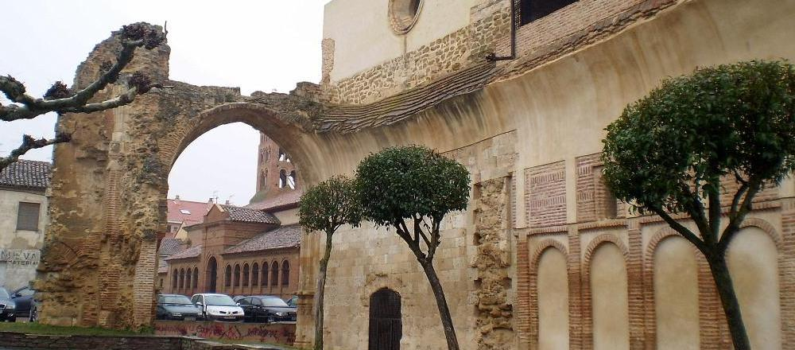

Sahagun
Sahagun is a spanish village in the south-east of Leon, just in the north-occidental zone in Castile and Leon. Located between Cea and Valderaduey rivers this area is known as Tierra de Campos, sharing it with other towns like Cea, Grajal de Campos and Calzada del Coto. In this zone Sahagun is the main population area.

Puente Canto (Stone Bridge)
It crosses the Cea river and it's part of the Santiago's Way
Located in the plains of the river Cea and Valderaduey, born in the shadow of a sanctuary dedicated to the martyrs Facundo and Primitivo and consolidated in the eleventh century with the arrival of the Order of Cluny and the grant of jurisdiction to the town by the king Alfonso VI of León. During his reign Sahagún gained importance with the boost given to the way to Santiago and the introduction in the peninsula of the rites and practices from Cluny against the Visigothic ones, leading to increased trade and extended the influence of the town over a wide area geographic. After holding its importance during the Middle Ages, the town's decline was gradual, accentuating it by the disentailment of Mendizábal. In 1931 it was the second Spanish town after Eibar, in proclaiming the Second Republic.

Ermita de La Virgen del Puente (Hermitage)
The first monument you'll see if you walk the Santiago's Way at the León province
Its heritage and monuments, and various celebrations taking place throughout the year, most notably "Semana Santa", make it a town receiving national and international tourism. Among its most representative monuments are the Church of San Lorenzo, the church of San Tirso, the Santuario de la Peregrina and the ruins of the Royal Monastery of San Benito, all of them declared of cultural interest.

Ruinas del antiguo monasterio (Ancient monastery ruins)
In the nearby you'll find the San Mancio chapel, San Benito arc and Trinity church
That cultural importance is accentuated by being a transit of the Camino de Santiago and belonging to the Federation of Cluniac Places. In 2009 the town celebrated the ninth anniversary of the death of King Alfonso VI, why were conducted several commemorative activities in the form of conferences and publications.
{kind=link}
{kind=link}
{kind=link}
{kind=link}
{kind=link}
{kind=link}
{kind=link}
{kind=link}
{kind=link}